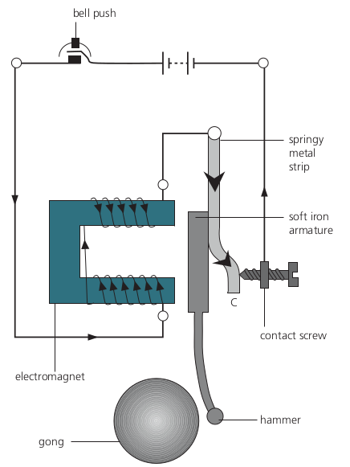

Chapter 9: Magnets and Currents
Physics - Year 11
Naypyitaw International Science Academy
9.1: Magnets

- The Earth has a magnetic field which behaves like a huge magnet
- The magnetic south pole is near the geographic north pole.
- This is why the magnetic north pole of a compass needle always points to Earth's geographic north.
9.1: Magnets
An unmagnetised magnetic material can be magnetised by bringing it close to or by touching a magnet.
This is called induced magnetism

9.1: Magnets
Soft magnetic materials have a stronger induced magnetism compared to hard magnetic materials.
9.1: Magnets
9.1: Magnets

9.1: Magnets
9.1: Magnets

9.1: Magnets

9.2: Magnetic Fields
A magnetic field is a region in space where a magnet experiences a force.

- The magnetic field lines are closer at the poles
- The closer the field lines, the greater the magnetic strength
9.2: Magnetic Fields
9.2: Magnetic Fields

9.2: Magnetic Fields
9.2: Magnetic Fields

9.2: Magnetic Fields

9.2: Magnetic Fields

Question: Why do the iron filings form different patterns in the above two experiments?
9.2: Magnetic Fields

When two like poles are brought together, there is a point where the combined field strength is zero.
This point is called the neutral point
9.3: Magnetic Field Effect of a current
When current passing through a wire, it sets up a weak magnetic field
9.3: Magnetic Field Effect of a current

- The field is circular
- the separation of the lines increases with distance from the wire because the field is gets weaker
- Increasing the current increases the strength of the magnetic field.
- Reversing the direction of the current reverses the direction of the field.
9.3: Magnetic Field Effect of a current

- To find the direction of current around a wire, we use the right hand thumb rule
- Wrap your right hand around the wire with the thumb pointing in the direction of current.
- The direction your fingers curl in tells us the direction of the magnetic field
9.3: Magnetic Field Effect of a current

9.3: Magnetic Field Effect of a Current

9.3: Magnetic Field Effect of a Current

The magnetic field of a solenoid looks very similar to a bar magnet with the magnetic poles at the ends of the coils
We can increase the field strength of a solenoid by:
- Increasing the current increases the strength
- Increasing the number of turns increases the strength
- Placing a soft iron core inside it
9.3: Magnetic Field Effect of a Current
Inside the solenoid, the field lines are closer together than they are outside the solenoid.
Right-hand grip rule: This states that if the fingers of the right hand grip the solenoid in the direction of the current, the thumb points to the N pole
9.4: Electromagnets
An electromagnet is a temporary magnet produced by passing an electric current through a coil of wire wound on a soft iron core.
The soft iron core is magnetised only when there is a current in the wire.
9.4: Electromagnets

9.4: Electromagnets
Relay
A relay is a switch based on an electromagnet.

- It is useful if we want one circuit to control another
- When a current in the coil AB sets up a magnetic field which attracts the iron armature which presses on the contacts at C
9.4: Electromagnets
9.4: Electromagnets
Reed Relay

- When current flows in the coil, the magnetic field produced magnetises the strips (called reeds) of magnetic material.
- The ends become opposite poles and one reed is attracted to the other, so completing
the circuit connected to AB.
9.4: Electromagnets
- When the door is closed: the magnetic fields of the magnet in the door and door frame cancel each other and the reed switch is open.
- When the door is opened: the magnetic field of the magnet in the door frame closes the reed switch and the alarm circuit is switched on.
9.4: Electromagnets
Loudspeaker

9.4: Electromagnets
Electric Bell
9.5: Magnetic Force on a current

- A wire in a magnetic field experiences a force if the magnetic field applied is perpendicular to the flow of current.
- The direction of the force depends on the direction of the magnetic field and the direction of the current.
9.5: Magnetic Force on a current
Question: What is the force experienced by a current carrying wire inside a solenoid?
9.5: Magnetic Force on a current

9.5: Magnetic Force on a current
9.5: Magnetic Force on a current
9.5: Magnetic Force on a current

The motion that is created in a current carrying conductor experiences in a magnetic field is known as the motor effect
9.5: Magnetic Force on a current
Question: Find the direction of the magnetic force if the current is flowing into the page.
9.5: Magnetic Force on a current
A straight wire in a magnetic field feels a force.
A wire made into a rectangular coil and placed in a magnetic field experiences a turning effect.
9.5: Magnetic Force on a current
9.6: Electric Motors

A simple DC motor